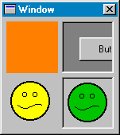

Hilfe
SetPanelImage

Aufruf
Parameter
Rückgabewert
Beschreibung
Beispiel
Siehe auch
SetPanelImage panel, bild$
Parameter
| panel | Identität von Panel-Objekt |
| bild | Dateiname eines Bildes |
Rückgabewert
-
Beschreibung
Die Anweisung SetPanelImage weist einem Panel-Objekt eine Hintergrundgrafik zu. Diese Grafik wird aus einer Datei geladen und sofort dargestellt. Sollte Panel-Objekt größer als das Bild sein, dann wird das Bild gekachelt dargestellt. SetPanelColor setzt dagegen eine Hintergrundfarbe fest.
setzt dagegen eine Hintergrundfarbe fest.
Panel ist einfach ein Objekt zum Gruppieren von anderen Objekten. Man kann somit weitere Objekte zu diesem Objekt hinzufügen.

Beispiel
Standardbeispiel:
window = CreateWindow("Window", 0, 0, 200, 200, 0, 1)
panel = CreatePanel(10, 10, 100, 100, window, 1)
button = CreateButton("Test", 0, 0, 50, 50, panel)
SetPanelImage panel, "c:\test.bmp"
Repeat
If WaitEvent(1) = $803 Then End
If KeyHit(1) = 1 Then End
Forever
panel = CreatePanel(10, 10, 100, 100, window, 1)
button = CreateButton("Test", 0, 0, 50, 50, panel)
SetPanelImage panel, "c:\test.bmp"
Repeat
If WaitEvent(1) = $803 Then End
If KeyHit(1) = 1 Then End
Forever
Siehe auch